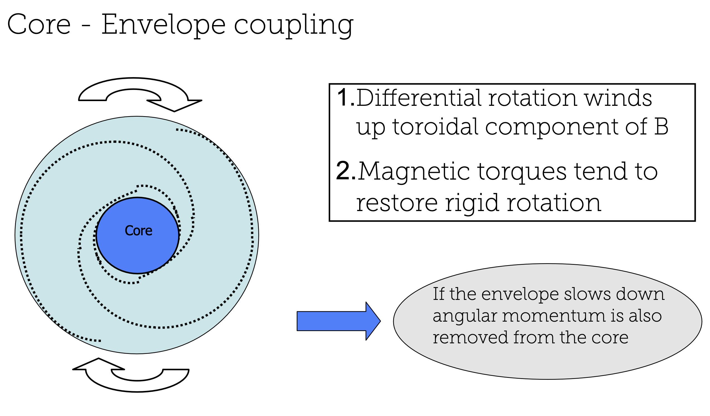
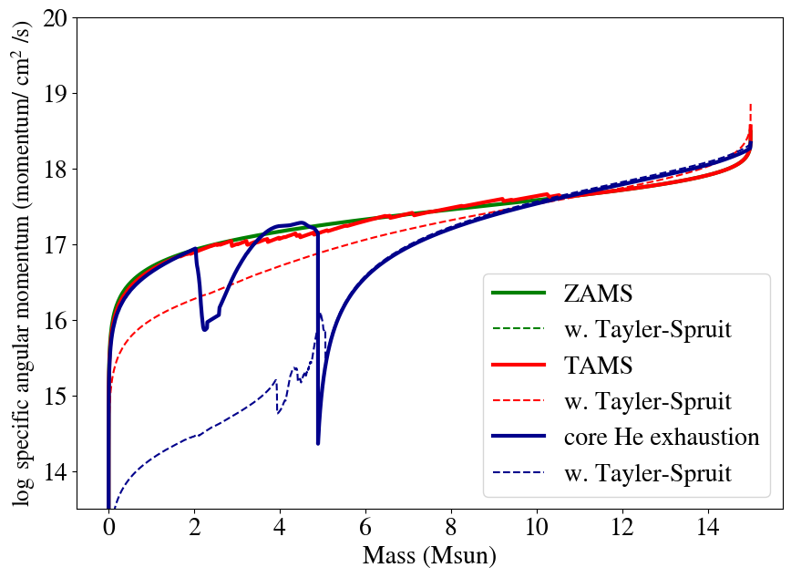

In the previous exercise, we've seen how the rotation of the core and the rotation of the envelope are not coupled.
Namely, while the core of the star is contracting and spinning up, the envelope of the star is expanding and spinning down.
There are however ways in which we can couple the core to the envelope.
In other words, ways in which we can transport angular momentum from the core to the envelope.
We will now look at the distribution of the angular momentum throughout the star, and how this affects the evolution/rotation of the star.
Task AM.1
Plot the the log of the specific angular momentum as a function of the mass, again at three different evolutionary stages:
I) Zero Age Main Sequence (ZAMS) II) Terminal Age Main Sequence (TAMS), and III) core He-exhaustion
Look at how the internal angular momentum content has evolved with time.
Can you explain the differences between the start and the end of the evolution of the star?
Remember that the specific angular momentum is defined as $j = r^{2} \cdot \omega $.
Compare your results with the bottom panel of Fig. 2 in Heger et al. (2005).
Is the general shape of the angular momentum profile similar to what you see in your model?
Do you spot any notable differences?
Start by selecting an loading the profile data, similar to task R4, still using the profiles of model_number 1 for ZAMS, model_number 200 for TAMS, and model_number 598 for core He exhaustion.
Similar to the omega profile in task R4, we see that the specific angular momentum represents that of a rigid rotator at ZAMS.
Namely specific angular momentum is defined as $j = r^{2} \cdot \omega $.
At ZAMS, the star is a uniform ball of gas so that we can approximate $r = \left(\frac{4}{3}\pi \rho \right)^{-1/3} m^{1/3} \propto m^{1/3}$.
So that, $j \propto \omega \cdot m^{2/3} $, where omega is constant. We are plotting $\log_{10}(j) \propto \log_{10}(m^{2/3})$.
This explains the main functional shape of the angular momentum profile.
We see that at TAMS, the outer part of the star still looks like a rigid rotator, but a divide has appeared between the core and the envelope.
At core He exhaustion, we see the star has gained additional structure from H shell burning, and we now have a distinct core-shell-and envelope.
When comparing to Fig. 2 in Heger et al. (2005), you will see that the general shape of the angular momentum profile is similar.
Some notable differences include: the lower angular momentum at TAMS (H-depletion), and that the line for He depletion ends at a lower mass ($\sim 12 \mathrm{M_{\odot}}$).
Both of these effects are related to the included wind-mass loss in the Heger et al. (2005) models (see next section on winds!)
Evolution with the Tayler-Spruit dynamo
One way to carry angular momentum in the star is through the magnetic field.
Magnetic field lines can `thread' the star and carry angular momentum with them.

The magnetic field couples the interior of the star to it's outer layers.
Image credit: slide from Matteo Cantiello MESA summer school 2012.
There is a 'magneto-hydrodynamic' instability known as the Tayler–Spruit dynamo (Spruit 2002)
In short, the differential rotation between different layers in the star generates a magnetic field. This instability becomes bigger because..
The jury is still out regarding the Tayler-Spruit dynamo mechanism, so you might want
to check what differences it makes including it or not in your calculations.
Tasks AM.2
We are going to re-run the same 15Msun star from ZAMS to core He exhaustion, but now including the Tayler-Spruit dynamo.
To save your run in a separate folder (so as to not overwrite your previous results),
you can change the logs folder name by adding the following to the &controls part of your inlist:
log_directory = 'LOGS_AM'
To add the Tayler-Spruit dynamo, parameters to add to &controls in inlist_rotating_star are:
! set the diffusion coefficients for AM transport and chemical mixing by TS dynamo
D_ST_factor = 1.0
am_nu_ST_factor = 1.0
where the first parameter multiplies the diffusion coefficient for angular momentum transport resulting from Tayler-Spruit dynamo (internal magnetic torque),
while the second multiplies the diffusion coefficient for chemicals (magnetic mixing).
Run your model and compare the results with the previous run.
Plot the radial velocity profile (omega vs mass) at ZAMS, TAMS, and core He exhaustion.
What is the effect of the Tayler-Spruit dynamo on the rotation profile?
(You will probably want to set the y-scale in log).
Plot the specific angular momentum profile at ZAMS, TAMS and core He exhaustion.
Compare your results with the top panel of Fig. 2 in Heger et al. (2005).
Solution AM.2:
At this point, your inlist_rotating_star should look like this.
The notebook with the solution to the plots can be found here.
At ZAMS, the $\Omega$ profiles are the same.
At TAMS, the $\Omega$ profile is different, with the Tayler-Spruit dynamo model having a more slowly spinning core and generally a flat (rigid rotation) profile.
At core He exhaustion, we see that the envelope is rotating very slowly, both with and without a magnetic field.
But the Tayler-Spruit dynamo model has a core that is rotating more than 2 orders of magnitude slower than the model without a magnetic field!
The specific angular momentum profiles should look like this:

Specific angular momentum profiles of rotating $15M_{\odot}$ star, with and without a magnetic field.
We see that the Tayler-Spruit dynamo model has a more uniform specific angular momentum profile,
with a core that is rotating much more slowly.
This result is in agreement with (though even more prominent than) what is shown in Heger et al. (2005)
where the specific angular momentum of the core has dropped by about an order of magnitude at core He exhaustion.
Bonus Exercises
Is there any difference between the MS timescale for the models with and without Tayler-Spruit B? Why?
Is the N-enrichment compatible with
results from other codes? And with massive stars observations?
Take a look at Heger et al. 2000 (e.g. Fig. 5)
and Potter et al. 2012 (Fig. 6) to draw your conclusions.